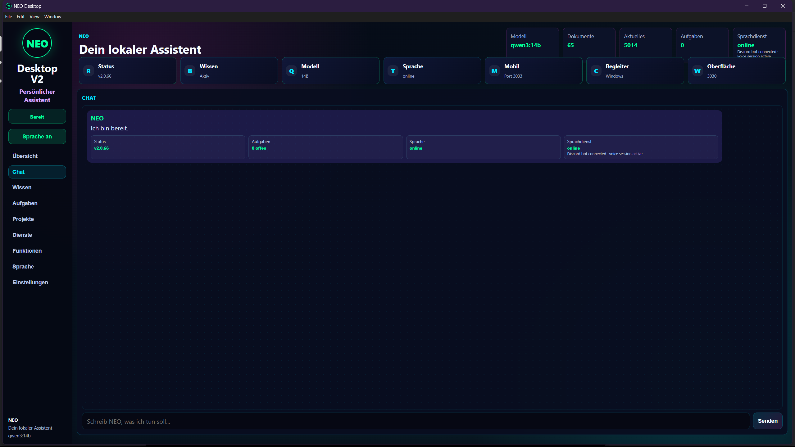

🤖 Persönlicher Assistent
Eine lokale Desktop-Oberfläche für Chat, Wissen, Aufgaben, Projekte, Sprache und Systemstatus – ohne klassische Entwicklerkonsole.
LOCAL AI · NANOCLAW · NEO
Mit NanoClaw / NEO entwickle ich einen lokalen Assistenten, der per One-Click Desktop App startet, natürlich kommuniziert, Wissen und Erinnerungen lokal verwaltet und kleine Web-Apps selbstständig erstellen, im echten Browser prüfen und ausliefern kann.
Eine lokale Desktop-Oberfläche für Chat, Wissen, Aufgaben, Projekte, Sprache und Systemstatus – ohne klassische Entwicklerkonsole.
NEO erstellt eigenständige HTML-Apps, prüft Struktur und JavaScript, startet Microsoft Edge und liefert Screenshot sowie Prüfbericht.
Ollama, qwen3:14b, SQLite Memory, Projektwissen und Runtime laufen lokal auf Windows und WSL.
Brain Context, Health Doctor, sichere Builder-Freigaben, Runtime-Überwachung, Companion, Sprache und kontrollierte Automatisierung.
ONE-CLICK DESKTOP APP
